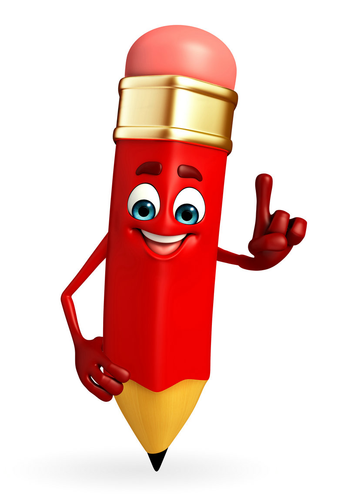

首页>>个人日记
发布时间：2015-01-28 作者：杨青
这是第一篇2015年的生活日记，我的这个博客也因为孕期给耽搁了不少，要不然每个月都能出一两套模板，或者定时更新一些技术文章，群里面也很少参与讨论。现在因为这个即将到来的小家伙，我不得不舍弃一些时间和精力。
发布时间：2014-07-31 作者：杨青

对于刚毕业的学生来说，想学习建网站，掌握一技之长，最简单的入门无非就是学会html和css，先前发表过一篇文章《如果要学习web前端开发，需要学习什么？》，如果你还不知道如何着手，请仔细阅读....7天的时间，入门是没有问题的，当然，如果你用心的话！
发布时间：2014-07-10 作者：杨青

不知道自己以后还能不能继续干这一行，结婚不到一年，也许某天开始会离开一两年，当再回来工作的时候，不知道是否能有单位再愿意聘请我，或者说自己能否再胜任这工作，因为这计算机编程专业发展的速度也相当快...三天不学都会落后，更何况是一年甚至更久...
发布时间：2014-06-30 作者：杨青

每个人的生命里都有一只碗，碗里盛着善良、信任、宽容、真诚，也盛着虚伪、狭隘、猜忌、自私……请剔除碗里的杂质，然后微笑着迎接另一只碗的碰撞，并发出你们清脆、爽朗的笑声吧！